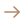

<!DOCTYPE html>
<html lang="ru" class="h-full">

<head>
  <meta charset="UTF-8">
  <meta name="viewport" content="width=device-width, initial-scale=1.0">
  <script src="https://cdn.tailwindcss.com"></script>
  <link rel="preconnect" href="https://fonts.googleapis.com">
  <link rel="preconnect" href="https://fonts.gstatic.com" crossorigin>
  <link href="https://fonts.googleapis.com/css2?family=Libre+Baskerville:wght@700&display=swap" rel="stylesheet">
  <script>
    tailwind.config = {
      theme: {
        extend: {
          colors: {
            'bg-main': 'rgba(242, 237, 228, 1)',
            'text-tab': 'rgba(148, 103, 70, 1)',
            'border-tab': 'rgba(236, 225, 204, 1)',
            'accent': 'rgba(67, 54, 171, 1)',
            'accent-selected': 'rgba(146, 136, 227, 1)',
            'green-text': 'rgba(34, 183, 193, 1)',
            'text-primary': 'rgba(23, 16, 82, 1)',
            'text-description': 'rgba(121, 88, 64, 1)',
            'text-last-highlight': 'rgba(203, 178, 149, 1)',
          },
          fontFamily: {
            'sf-pro': ['"SF Pro Display"', 'system-ui', 'sans-serif'],
            'baskerville': ['"Libre Baskerville"', 'serif'],
          },
        },
      },
    }
  </script>
  <title>Word Satori</title>
</head>

<body class="h-full flex justify-end bg-white font-sf-pro">

  <aside class="w-[350px] h-screen flex flex-col shadow-[0px_24px_64px_0px_rgba(121,88,64,0.1)] relative">

    

    <header
      class="h-[56px] flex justify-between items-center p-[16px] bg-white rounded-tl-[20px] shadow-[0px_8px_32px_0px_rgba(174,139,80,0.2)] z-10">
      <div class="flex items-center gap-3">
        

        <label class="relative w-[40px] h-[20px] rounded-[12px] flex items-center cursor-pointer">
          <input type="checkbox" class="peer hidden" />

          <div
            class="w-full h-full rounded-[12px] bg-gray-300 peer-checked:bg-[rgba(210,204,251,1)] transition-all duration-300">
          </div>

          <div
            class="absolute top-1/2 left-[1px] -translate-y-1/2 w-[18px] h-[18px] rounded-full bg-gray-500 peer-checked:left-[calc(100%-19px)] peer-checked:bg-[rgba(67,54,171,1)] transition-all duration-300">
          </div>
        </label>
      </div>

      <div>
        
      </div>
    </header>


    <main class="flex-1 flex flex-col p-[16px] overflow-y-auto bg-bg-main z-10">

      <div class="relative flex items-center gap-4 mb-6 h-10 font-sf-pro">
        <div class="flex flex-1 items-center justify-between gap-2 h-10 px-3 py-2 rounded-lg bg-white">
          <input type="text" placeholder="Add word"
            class="flex-1 h-full bg-transparent outline-none border-none text-[16px] leading-[20px] font-normal text-green-text placeholder:text-[16px] placeholder:leading-[20px] placeholder:font-normal placeholder:text-accent-selected" />
          
          <!--  -->
        </div>

        <button>
          
        </button>

        <!-- <div
          class="absolute top-[calc(100%+4px)] left-0 w-[calc(100%-40px)] bg-white rounded-lg overflow-hidden shadow-[0_4px_12px_rgba(0,0,0,0.08)] z-10">
          <div
            class="flex items-center justify-between h-12 px-3 cursor-pointer font-bold text-[18px] border-b border-[rgba(242,237,228,1)]">
            <div class="font-baskerville text-text-primary">pheno<span class="text-text-last-highlight">menon</span>
            </div>
            
          </div>
          <div
            class="flex items-center justify-between h-12 px-3 cursor-pointer font-bold text-[18px] border-b border-[rgba(242,237,228,1)]">
            <div class="font-baskerville text-text-primary">pheno<span class="text-text-last-highlight">menon</span>
            </div>
            
          </div>
          <div
            class="flex items-center justify-between h-12 px-3 cursor-pointer font-bold text-[18px] border-b border-[rgba(242,237,228,1)]">
            <div class="font-baskerville text-text-primary">pheno<span class="text-text-last-highlight">menon</span>
            </div>
            
          </div>
        </div> -->
      </div>


      <h2 class="text-lg font-semibold text-accent mb-4 font-baskerville">My Wordbank</h2>

      <div class="flex border-b-4 border-border-tab mb-[24px] font-['SF_Pro_Display']">
        <button
          class="flex-1 text-center font-semibold pb-[12px] text-base leading-5 tracking-normal text-accent relative after:absolute after:bottom-[-4px] after:left-0 after:right-0 after:h-1 after:bg-accent-selected">
          Wordbank Hits
        </button>
        <button
          class="flex-1 text-center text-text-tab font-semibold pb-[12px] text-base leading-5 tracking-normal relative">
          All words
        </button>
        <button
          class="flex-1 text-center text-text-tab font-semibold pb-[12px] text-base leading-5 tracking-normal relative">
          WordPacks
        </button>
      </div>

      <div class="flex items-center gap-2 mb-2">
        
        <span class="font-sf-pro font-semibold text-[16px] leading-[20px] text-text-tab">
          2 Words
        </span>
      </div>

      <div
        class="h-full overflow-y-auto [&::-webkit-scrollbar]:hidden [-ms-overflow-style:none] [scrollbar-width:none] flex flex-col gap-1">
        <div
          class="group flex flex-col gap-2 p-3 rounded-lg cursor-pointer shadow-[0_12px_12px_-8px_rgba(148,103,70,0.15)] bg-white border-2 border-transparent transition-all duration-300 hover:border-accent-selected">
          <div class="flex justify-between items-center">
            <span
              class="font-baskerville font-bold text-[18px] leading-[100%] text-[rgba(23,16,82,1)] transition-all duration-300 group-hover:text-accent">
              Mutter
            </span>
            
          </div>
          <div class="flex items-center gap-2">
            <span
              class="bg-bg-main px-2 py-[2px] rounded text-[14px] text-text-tab leading-[18px] font-sf-pro font-normal text-[rgba(23,16,82,1)]">
              Verb
            </span>
            <h6 class="font-sf-pro font-normal text-[14px] leading-[18px] text-accent-selected">/ˈmʌtə/</h6>
            
          </div>
          <div class="flex items-start gap-1">
            
            <p class="font-sf-pro font-normal text-[16px] leading-[20px] text-[rgba(121,88,64,1)]">
              To utter sounds or words indistinctly or with a low voice and with the lips partly closed
            </p>
          </div>
        </div>
        <div
          class="group flex flex-col gap-2 p-3 rounded-lg cursor-pointer shadow-[0_12px_12px_-8px_rgba(148,103,70,0.15)] bg-white border-2 border-transparent transition-all duration-300 hover:border-accent-selected">
          <div class="flex justify-between items-center">
            <span
              class="font-baskerville font-bold text-[18px] leading-[100%] text-[rgba(23,16,82,1)] transition-all duration-300 group-hover:text-accent">
              Profound
            </span>
            
          </div>
          <div class="flex items-center gap-2">
            <span
              class="bg-bg-main px-2 py-[2px] rounded text-[14px] text-text-tab leading-[18px] font-sf-pro font-normal text-[rgba(23,16,82,1)]">
              Noun
            </span>
            <h6 class="font-sf-pro font-normal text-[14px] leading-[18px] text-accent-selected">/fɪˈnɒmɪnən/</h6>
            
          </div>
          <div class="flex items-start gap-1">
            
            <p class="font-sf-pro font-normal text-[16px] leading-[20px] text-[rgba(121,88,64,1)]">
              Having intellectual depth and insight
            </p>
          </div>
        </div>
      </div>
    </main>
  </aside>

</body>

</html>